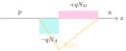

; in the depletion approximation ,
; in the depletion approximation ,  , and the junction is a voltage-dependent capacitor
, and the junction is a voltage-dependent capacitor  .
.Derivation
- Built-in potential: far from the junction is fixed by doping on each side; flat
 forces a band bending (Shockley 1949).
forces a band bending (Shockley 1949). - Depletion approximation: for , for , zero elsewhere; neutrality .
- Poisson : triangular field, peak .
- Potential drop = area of the triangle: . Solving gives
 above. One-sided junction (): , almost all in the lightly doped side.
above. One-sided junction (): , almost all in the lightly doped side.
Picture

Charge (shaded) and field (triangle) in an abrupt junction with .
Capacitance and breakdown
: vs  is a line whose slope gives the doping (C–V profiling); varactors exploit it. Breakdown: avalanche when (~3×10
is a line whose slope gives the doping (C–V profiling); varactors exploit it. Breakdown: avalanche when (~3×10 V/cm in Si), so — low doping for high voltage; Zener (band-to-band tunnelling) for heavy doping, V.
V/cm in Si), so — low doping for high voltage; Zener (band-to-band tunnelling) for heavy doping, V.
Worked example
Si,  , cm
, cm : V. At V: µm, V/cm, nF/cm². V.
: V. At V: µm, V/cm, nF/cm². V.
Engineering applications
Varactor tuning in VCOs, junction capacitance as parasitic load in CMOS (drain diffusions) and in photodiodes (RC bandwidth), ESD clamps and Zener references, depletion-mode silicon modulators (plasma dispersion), drift-region design of power devices.
Pitfall
is the applied forward voltage: reverse bias is  , which widens . Forgetting the sign makes imaginary for — the depletion approximation breaks down under strong forward bias.
, which widens . Forgetting the sign makes imaginary for — the depletion approximation breaks down under strong forward bias.